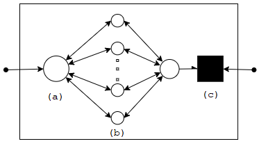
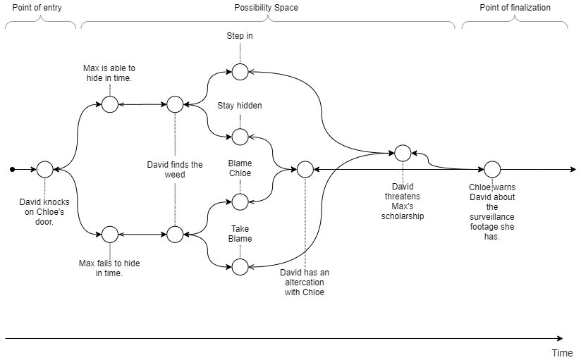
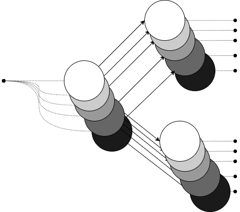
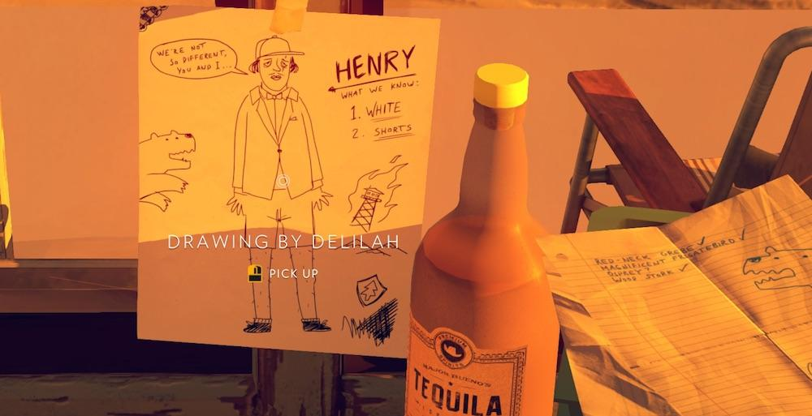
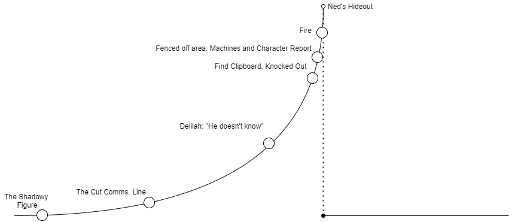

—————————————————————————
Proxy Protagonists:
Foundations for Meaningful Choice in Digital Interactive Media
An Analysis of Video Game Narratives
Mohammed
Mehboob
(mohammed.mehboob@mail.rit.edu)
Life is Strange — The Mechanics of Choice
Nostalgia, Responsibility, and the theme of Chaos
Firewatch — The Illusory Nature of Choice and Authorship
Stories are an integral part of every human being. We thrive on them. Furthermore, in this day and age — the stories we encounter can reflect as much upon us as we upon them.
This paper explores how we might ascertain the significance of interactivity and choice in narratives for generating long-lasting impressions on consumers. How and when do stories become significant? Furthermore, what might be the distinction between having “choices that feel significant” versus “choices that are significant” in interactive narratives.
To understand these questions, we must first think about the basic building blocks for meaningful outcomes in narratives. As such, we will consider the following elements of narratives: • Emotional investment in the characters and storyworld, • The role of Causality and “Fill-in-the-blank” storytelling in generating said emotional investment, and • Realistic characters with flaws, and how they deal with that.
What makes video games an effective medium for delivering narratives capable of leaving players with long-lasting impressions? To understand this, we must break down our problem: We must first understand what makes video games an effective medium.
An element of this is understanding the distinction between old media narratives and new media narratives and the dance between “Play” and “Narrative.” Expanding on this, we establish the context that: here, the term “old media narratives” refers to traditional narrative media such as books, theatre, movies; and, the term “new media narratives” refers to more recent kinds of media, such as but not limited to, hypertext adventures, video games, VR & AR.
What new media narratives hold over old media narratives is the capacity to generate emergent narrative — that is to say, they allow the player/consumer to create their own stories through interaction & play. This often includes choice and agency, which is compounded by the fact that new media narratives are never purely composed of emergent narrative only — they are an amalgamation of both traditional and emergent narrative. This permits new media narratives the potential to have an effect more significant than the sum of its parts.
| “There is something in the sequence of ‘printed book — movie — interactive visual medium — complex electronic game’ that suggests, if not an evolution or teleology, at least a discernible trend towards the possibility of ever greater orchestrations of Future Narratives and of an increase of what we have come to call ‘nodal power,’ that is, the degree of openness that any nodal situation offers” (Bode 8; Preface). |
Thus, we may assess that new media narratives exist on a spectrum. One end: offering narrative exclusively through traditional means: being comprised entirely of pre-defined text — in essence, a traditional narrative, and, on the other end: offering narrative exclusively through emergent means: i.e., A Pen-and-Paper RPG, where only the setting and the rules are predefined, and all subsequent story is purely emergent through play.
A reasonable assumption to be made is that the medium of video games exists somewhat as a middle-ground between the two ends of the spectrum. At its core, every video game comprises two defining elements — “The Mechanics” and the “Story.” The “mechanics” signify the rules governing interactivity, and the “story” signifies the video game’s fiction. As such, emergent narratives deliver meaningful experiences through the establishment of either
(a) A Sense of Authorship, or
(b) A Sense of Emotional Connection.
For example: In Minecraft, the act of building invokes a sense of authorship within the player. Alternatively, games with a systemic design — where each of the game’s individual systems influences the emergent gameplay, along with aspects of RNG (Random Number Generation) — have the potential to bring about memorable moments through instances of real emotional effect, such as through fun and laughter, frustration and rage, or anything in between. Think “Far Cry 4” (Ubisoft, 2014), “Subnautica” (Unknown Worlds Entertainment, Gearbox Interactive. 2014), or “Hades” (Supergiant games, 2020).
Ultimately, a large part of imparting memorable experiences onto players comes from the game narrative being able to retain the player’s engagement long enough to deliver its contents.
In their book “Half-Real: Video Games Between Real Rules and Fictional Worlds,” author Jasper Juul points out that “[r]ules and fiction compete for the player’s attention. They are complementary, but not symmetrical: [...] Though rules can function independent of fiction, fiction depends on rules. [...] [R]ules are designed to be objective, obligatory, unambiguous, and generally above discussion. With fiction in games, we find the opposite to be true: a strong part of the attraction of fiction in games is that it is highly subjective, optional, ambiguous, and generally evocative and subject to discussion. Rules and fiction are attractive for opposite reasons” (121; Ch. 4). The author of the book “Storyplaying: Agency and Narrative in Video Games,” Sebastian Domsch, refutes this notion as incomplete. They suggest that Juul’s statements neglect the possibility of a video game’s rules connected to the game’s fiction (151; Ch. 6). This paper proposes an interpolation of these two views: the rules and the fiction of a game lie on a spectrum, rather than be rigidly defined in one way or another. The two elements are fluid so far as these elements happen to “rise above” to fill the demand posed by their complement — the real potential for storytelling arising when the two elements exist in equilibrium.
Game designer Jurie Horneman, in their 2015 GDC session on “The Design in Narrative Design,” comments on how an imbalance between the contributions of the mechanics and the fiction within a video game can cause dissonance, which risks breaking the player’s suspension of disbelief. Furthermore, Horrneman defines the term “diegesis” as the situation wherein a game can justify its mechanical elements within the game’s fiction, bringing about a balance.
Before we explore any further, it is imperative first to understand what constitutes a choice — at its core, it consists of two choices: two mutually exclusive continuations stemming from the same “nodal situation.” The term nodal situation comes from the narrative researcher Christopher Bode’s formalization of non-unilinear narratives called “Future Narratives,” where “The fundamental idea of ‘Narrating Futures’ is a straightforward one: as a rule, narratives have events as their minimal units. Nevertheless, there is a certain, hitherto undiscovered corpus of narratives that have, in addition to events, one special feature, indeed differentia specifica, that other narratives don’t have: they have nodes. A node is a situation that allows for more than one continuation” (7). To simplify, we might say that future narratives are the kinds of narratives that, at their most basic level, have the underlying unit of a “nodal situation” as their minimal unit of interactivity. The notion that “every ‘now’ contains a multitude of possible continuations” (Bode, 1; Ch. 1). These are narratives that give its consumer the capacity to influence the direction it takes with the narrative branching out (or in) — the consumer’s experience depends on their choices, which are influenced by their identities, values, and motivations. Key distinctions include the various categorizations of narratives predicated on the structure of their storylines — linear, multi-linear, and non-linear storylines — that is to say, it is not necessary if a narrative is non-unilinear, then it has to be non-linear as well.
Under such a foundation wherein each branching continuation is mutually exclusive, it comes naturally that the “player will be interested in the outcome of the choice and will expect one outcome to be better than another” (Sebastian Domsch. 113; Ch. 5).
To talk about the mechanics of “Life is Strange” (Dontnod Entertainment, 2016) as an interactive choice-based game, The aspect that the player/consumer of the media tries that their choice leads them to the continuation which is more favorable to them, being doubly as applicable to the gamer demographic where — It is part of the culture: with systemic incentives such as achievements and “gamer-scores,” for gamers, perfection is everything. Thus, it is only because of this culture that concepts such as save-scumming and players looking up walkthroughs to 100% completion runs exist. The game marries together its story and its mechanics to bring forth diegesis wherein — The narrative only makes sense through the employment of its core mechanic, and the core mechanic only exists within the context of the game’s narrative. Both aspects of the game exist to balance each other.
In a brilliant move by Dontnod Entertainment, “Life is Strange” (2016) brilliantly subverts this cultural practice by integrating the process of deliberation — of which continuation does the player consider to be the best out of all the potential continuations offered at a given nodal situation — into the core mechanics itself. Furthermore, the game frequently auto-saving prevents the player from returning to a previous situation after finalizing a choice. The anatomy of choice in “Life is Strange” (Dontnod Entertainment, 2016), in terms of a formal representation, offers a non-linear storyline where each nodal situation exists as a superposition of each of the choices/branches in its possibility space. Such a nodal situation may be described as consisting of: (a.) A point of entry where the player has the choice to either go back to the previous node or pick from a given set of predetermined choices; (b.) The constituent choices themselves; and finally, (c.) A point of finalization — this would be the point at which the selected choice can no longer be changed or altered. Such a definition also allows for the storyline to have embedded narratives recursively.

Though, this still does not answer the question: What is in a choice? The choice is something that is inherently “subjective” and “personal.” How does one translate something such as that to a medium wherein everything is, for the most part, predetermined? One aspect of at least achieving the appearance of choice comes from how the player has information — reasonable information such as context surrounding the choice and the characters showing how the protagonist came about choosing can help bridge the gap between reality and the fiction that the game provides. In the fourth chapter of episode-1: Chrysalis, we as players encounter a scene where Chloe has an altercation with her stepfather, David. There are a few ways in which it can play out: Let us examine the different ways in which it does:
Pretext: Max and Chloe are in Chloe’s room. Chloe has stolen David’s gun.
Situation/Conundrum: David is knocking at the door — Chloe asks Max to hide. David wants to interrogate Chloe on whether she stole one of his guns. Once he enters the room, he begins to shout at Chloe after discovering the pot in her room. Does the player step in?
This choice has an essential dimension of being “temporal.”Choice situations can be either a-temporal or have a temporal dimension, which means that there might be a limited amount of time during which the options are available, or that — after a finite amount of time — not making any choices will produce an outcome that is different from the choice citation and that therefore constitutes a choice in itself” (Sebastian Domsch, 117; Ch. 5).

| Choice Taken | Immediate Consequence | Deferred Consequence |
| Blame Chloe | Chapter-1:
|
Chapter-2:
|
| Take the Blame | Chapter-1:
|
Chapter-2:
|
| Stay Hidden | Chapter-1:
|
Chapter-2:
|
| Step In | Chapter-1:
|
Chapter-2:
|
Therefore, we might see that each choice involves:
A Context: What is the information surrounding the choice.
The Situation/Conundrum: What is the event that brought about the choice.
The Mechanic: How do we choose? i.e., Is it temporal or a-temporal?
The Immediate Consequences, and,
The Deferred Consequences.
In a game where all choices can be changed, how does one enforce the idea of real consequence? The game’s high school setting and the aspects of its characters’ rebellious nature, vibrant visuals, and nostalgic music contribute to the sustained suspension of disbelief. It stems from the game’s story-mechanics diegesis, which goes towards giving the player the impression that, with the protagonist having the power to bend time to her will, they can always rely on “time” — that it is going to be a good experience insofar that the player will not have to worry about the repercussions or making the “wrong” choice. The developers realize this, and therefore, through this organization of the nodal situations, they give the decision-making process an appearance of significance since players can see each continuation play out in real-time, but with no guarantee that their chosen continuation will be yield a favorable outcome in the long term — and when the player finds out that they “probably should not have done XYZ,” it will be too late. At that point, there would be no turning back.
The notion that the play can reverse most choices will build up over time and inculcate into a habit through play. This notion comes to a screeching halt when it all comes to a head in Episode 2, during Kate’s suicide scene — A subversion of the gameplay so far. The game seemingly taunts the player along the lines of: “You thought you could abuse the system?” through disallowing the player to rewind time at all. The player is on their own now.
This ties into one of the central themes of the game: The butterfly effect. Just how we as individuals are defined by our choices — some of these decisions can have very significant impacts on our lives. The choices we make also have the potential to impact the world around us significantly. This is the basis of the butterfly effect: that “a butterfly that beats its wings in one corner of the globe and with that single action changes the weather halfway across the world.” Every decision comes at a cost. Earlier in Episode 2, when we have a discussion with Kate about going to the police or gathering more proof, or, from the event in the diner when we get a call from Kate — the choices we make have deferred consequences in making it more difficult to save her in the rooftop scene.
The real way to save Kate is not from the nodal situations and the decisions the player makes within them, but from the moments and gameplay between them. The player’s memory of Kate’s beliefs and family is what allows Max to bring her down. The concept of “Spatial Narrative” comes into play — the way that the player interacts with Kate and with the things in her surrounding and the engagement of the player with the navigable space generates a narrative unto itself — Details on a note, or on a letter in her book and bible that you learn of Kate’s life. In turn, the player is rewarded for paying attention; there is nothing better than to convince Kate to get back down. At that moment, the player’s actions have gravity.
The theme of chaos and the player’s choices having severe and rippling effects is exemplified in Episode 3, where Max discovers that she can travel to the past by focusing her power on polaroids — in doing so, she travels to the past and saves Chloe’s father. On returning back to her own time, she finds that her reality has been changed completely. David is a bus driver. Max hangs out with the Vortex club members. Max goes over to Chloe’s place, and when she gets there, she discovers that by saving Chloe’s father, Chloe herself got in an accident.
She tells Max that her respiratory system is failing and that her end is close — she asks Max to end her suffering. The player’s decision here does not affect the story in any capacity and is an isolated incident. However, it has a significant emotional impact on the player and gives them great insight into the fact that the player has to be more responsible in using Max’s powers and not take it for granted. The notion of your decisions impacts entire realities that could have been — now gone, never having even existed.
via: Square Enix. “Life is Strange,” 2015
Catharsis comes from the conflict between the protagonist and the antagonist, but in the case of “Life is Strange” (Dontnod Entertainment, 2016), the role of the antagonist is shrouded in uncertainty. It is not necessarily Jefferson, but rather, the world itself. The world — rebelling against the player and the player’s actions. As the player, you have repeatedly meddled with the natural flow of time, breaking apart the fabric of reality itself. In hindsight, the euthanasia embedded-narrative only primes the player up to understand that — Life is Stange as a game is about sacrifice — that nothing comes without a cost. Ultimately, the decision falls into the hands of the player: who pays the price? Furthermore, the player’s choice to sacrifice the one person they went through so much to save — The conundrum of agency & accountability. The player has already seen how much of a different reality Chloe can exist in; many have also already killed her once: and it is not just that — It is that we eradicated even the possibility of her existence. Moreover, to be placed in a situation where the choice is only binary: Does the player choose Chloe, or does the player choose Arcadia Bay and the many people that call it home? A twisted catharsis. There are no perfect choices — in a game where the player, time and again, sought to do that which made the most sense, now faces an impossible choice. Then again, you may also argue that the antagonist, in totality, is left up to the player’s interpretation of the game’s story.
The choices were already laid out, they always have been, but if the game can grip the player enough that they are in a state of suspension of disbelief — the predetermined nature of these choices fades into the background, and all that remains is you — you, the protagonist as a vessel for you to vicariously live through—that, and the conundrum that lies ahead, and all the moral connotations it carries.
To treat morality as being about saving yourself. To treat the real-world value of your actions as less important than what these things say about and what you meant to do. For someone that was we have been desperately trying to save and go through so much for — even going so far as to perform, or at least, entertain the idea of euthanasia even; and what for? It all comes to a head— what is it that we do?
Shifting our perspective from “Life is Strange” (Dontnod Entertainment, 2016), a non-linear game, to “Firewatch” (Campo Santo, 2016), a linear game. Both of these games, still revolving around the central theme of choice: implement their method of allowing the player to participate in the events very differently. In “Life is Strange” (Dontnod Entertainment, 2016), at each nodal situation, the player is presented with a set of choices, where each choice yields a separate, mutually exclusive continuation. “Firewatch” (Campo Santo, 2016), on the other hand, offers a linear storyline.
The plot follows Henry, a 39-year-old from Boulder, Colorado, whose wife, Julia, unfortunately, has Alzheimer's disease. To escape this, Henry takes up a position as a Firewatch park ranger at the Shoshone National Forest and is then stationed at the Two Forks Lookout.
Throughout the game, Henry is presented with opportunities to engage in dialogue with Delilah, his boss. The aspect of choice comes in how the player has agency over what to say, if anything at all, to Delilah during their talks over walkie-talkies. However, the caveat stems from the fact that “Firewatch” (Campo Santo, 2016) has a linear storyline and that all these choices offered are merely illusory. So how then, can we place “Firewatch” (Campo Santo, 2016) in the context of Future Narratives?
Under the conventional understanding that has been formed over the traversal of this paper, we have attempted to form a proper understanding of choice, defining them by the properties they possess and not by the experiences they generate. This does not take the subjective nature of choice into consideration — the way it affects the player: it doesn’t need to have a formalized differentiation that is always necessarily indicative of the distinction between once choice and another; In philosophy and certain models of psychology, the term “qualia” is defined as “the subjective or qualitative properties of experiences. What it feels like, experientially, [...] for hearing a musical note played by a piano and hearing the same musical note played by a tuba. The qualia of these experiences are what give each of them its characteristic ‘feel’ and also what distinguishes them from one another” (Internet Encyclopedia of Philosophy). Choice is subjective — in the sense that — communication is subjective, rooted in its translatory nature; We know that a choice is a choice, just by virtue of its qualia.
.Each choice taken comes from a differing context insofar that between each choice, Henry, the protagonist, has a wide range of ways to interact with the environment. The game places authorship in the hands of the player — there are not any minimaps, you traverse by using your map and compass, and later in the game, the tracking device; the space is open, and so, the player can do whatever they wish within the bounds of the mechanics offered. The result of this is that the player is responsible for authoring who Henry really is — is Henry the kind of person who would throw the girl’s boombox into the water? Is he the kind of person who would collect all the beer cans littered around? As such, every choice made has a different meaning to the player, and therefore, it can be argued that the continuations originating from a choice of dialogue are unique and mutually exclusive. Each choice being colored in a different shade of grey, symbolizing the various “shades” of Henry that can originate from the individual choices made by the player
.
Hence, the game gives players a real and tangible feeling of their choices being significant through introducing many mico-decisions—the decision of the boombox, the beer cans, and so forth. And the only way to perform these micro-decisions is through interacting with the game world. The changes made through these small decisions are persistent — and thus, when they are revisited, it feels like the world of “Firewatch” (Campo Santo, 2016) is a world that is lived in.

via: Campo Santo. “Firewatch,” 2016
Over the walkie-talkie, Delilah asks Henry for a description of how he looks. The way the player describes the character then comes back up in the ending — where there is a caricature of Henry stuck on the window in Delilah’s lookout.
Christopher Bode, in their book “Future Narratives,” says, “Often, the mere indication of a temporal sequence — first this, then that — is enough to trigger the idea that maybe this sequence is not only a coincidence but that the two events are causally related” (4; Ch. 1); This shows the tendency of us as humans to try to “fill-in-the-blanks” to try and make sense or meaning out of potentially unrelated events; And so, causality and the formation of causal links act as an integral part of us forming emotional bonds with stories.
“The entire point of stories is to let us experience other places and other lives” (Lebowitz and Klug 107; Ch. 5). Such instances where we as observers form connections and causal links between events tend to be more impactful than those given directly. One may argue that no predefined story or embedded narrative can compete with what the imagination can come up with — It is more rewarding for players to form their own narratives within storyworlds, through them not merely being an idle bystander to the happenings of the storyworld, but being an active and influential part of it. As Lebowitz and Klug put it, “To us, the place and characters have become alive and real. They’re not strangers on a page — they’re our friends, companions, and enemies, and as such, we truly care what happens to them” (107; Ch. 5).
In “Firewatch” (Campo Santo, 2016), everything you encounter within the story, save for the ending itself is conveyed to the player in a way such that they will surely form causal links between them.
The player witnesses the ascent in the game’s story, and at every turning point, especially in the beginning parts of the story, they are given only shards of an embedded-narrative about a grand conspiracy and the responsibility of piecing them together and forming their own story falls on the player. The game doesn’t overtly tell us about the conspiracy of what’s happening in the forest, rather that it shows us. We, as Henry along with Delilah, experience it first-hand. And with each passing event, we are convinced of it more and more. We form causal links between all of these events. The shadowy figure the player sees in the beginning of the game, followed by the Two Forks Lookout being trashed, to the communications line being cut. Furthermore, right after, Delilah says: “He doesn’t know.” Something is fishy. Henry is paranoid, and our reflex as the player is to identify with that paranoia.

On the second day, when Henry has to pass through the cave, he overhears Delilah talking to someone over the walkie-talkie. She says, “No, I do not think he has any idea. I am absolutely sure. Would you?” We are given no context for this — we don’t even know if it concerns us. However, right after, we are given the option to ask her about the call. In a sense, most players will want to — this is because the player forms causal links between the preceding events and this conversation. Was it related? Who was Delilah talking to? Was it the shadowy figure we saw earlier? Is that the same guy who cut the communications line? These mounting questions build within our minds: there is no impetus to them but our own imagination.
If the player does choose to ask Delilah about the call, she is visibly upset about Henry invading her privacy, and the game prompts the player that she is annoyed.
At the end of the day, “Firewatch” (Campo Santo, 2016) has nothing to do with conspiracy theories; It is a game about tragedy, problems, and how people deal with grief, or rather, how they fail to do so. The sad story of a father incapable of fully accepting and moving on from the death of his child. By the end of the, it is abundantly clear what the game wants to tell us — the ending is the way it is for the express purpose that it is meant to be that way — it is not that the developers got lazy or that they did not have the time to come up with something better — it is that the developers wanted you to feel that way. To face reality and face your own problems.
Thus, “Firewatch” (Campo Santo, 2016) is an exercise in the subversion of the player’s expectations. Henry acts as a glove for the player to fill — to live within the gameworld through him vicariously. It is an escape from reality.
The distance between us as the player, Henry, and his tragedy is abundantly clear right from the beginning of the game. We never even see Julia, and we, as the players, define Henry’s story through a literal fill-in-the-blanks segment at the beginning of the game. In their book “The Negative Trait Thesaurus- A Writer’s Guide to Character Flaws,” Angela Ackerman and Becca Puglisi point to the fact that “Characters are all about self-discovery, finding meaning, and achieving goals. They’re usually seeking to improve themselves in some way — at work, in personal relationships, spiritually, or through self-growth” (8). They point out that the world is filled with flawed people, and the stories we are, ultimately, imitations of real life. For characters, particularly painful events from their past inflict upon them what is called a character’s “wounds.” These wounds come from “defining emotional experience from a character’s past is so debilitating that they will do anything to avoid suffering the same kind of pain again” (Ackerman and Puglisi. 8).
More importantly, flawed characters put up a facade to cover and hide their wounds. They construct lies within which they seek shelter, and these lies seemingly embed themselves into the character’s life—becoming an integral part of their psyche. This lie also serves as easy excuses to hide away their emotions — ironically, the lie that they form to help with their pain is the very thing that inhibits them from their personal growth. In “Firewatch” (Campo Santo, 2016), our protagonist Henry has an initial stoic persona. The facade that he puts up, signifying that he does not need anyone, fades over time as he gets closer and closer to Delilah. Being involved in a grand conspiracy acts as a cover for him to let go of his inhibitions finally. In the exhilaration it provides, he can finally forget about his inner demons. Julia and the fact that he cannot stay as he is forever fade into the background — And through this adventure of uncovering the mystery of the forest, knowing that the only person who understands him is Delilah and that he can trust her, acts as an anchor. An anchor for him to finally let go of his pain. Furthermore, as we, the players, see how Henry’s relationship with Delilah grows more intimate over the course of this journey. Having only one person to talk to, only one person they can truly trust.
Henry and Delilah seek comfort in each other — believing that they are in the midst of a grand conspiracy — pulling together bits and pieces of information, and conveniently letting their imaginations create causal links between seemingly unrelated events. The player is also guilty of this, just as much as the characters within the game are. They, too, are sucked into this microcosm of questions — questions of “why?” and “how?” The simple thrill of being part of something greater than just us as individuals and finally escaping the mundanity of life is too appealing of an offer to turn down. All of this, coming to a head with a revelation of the ugly truth of the kid, Bryan’s demise, and soon after that, the realization that the ominous fences, the tools and machinery, the tracking tool and all this time, the things we thought were extraordinary — we nothing but. A sad story of a father incapable of fully accepting and moving on from the death of his child. It is a rude awakening.
We had let everything we saw get to our imagination.
The game asks us; nay; forces us to confront the reality of things — that Henry cannot run away from his problems forever. “Most importantly, hidden behind the persona is the lie that creates the character’s flawed behavior and negative thinking. [...] The outer motivation is what the character wants to achieve, the outer conflict is the element that’s stopping them from attaining that goal. Put simply: the character must first achieve X, but Y is stopping them” (Ackerman and Puglisi, 10-11). In the end, through the realization that you have to face your problems. Henry finally attains catharsis.
Choice is illusory; the actual feeling of substance and significance of our choices comes from handing off the authorship to the player in framing their own personal, memorable experiences — through the protagonist as a proxy for you, the player, and that you live out your fantasy vicariously through them. The player’s micro-decisions at each step — exploring the spatial narrative offered by the gameworld shape your experience. Ultimately, the player sees their character grow, and by extension, the player feels a sense of growth as well.
The cases of “Firewatch” (Campo Santo, 2016) and “Life is Strange” (Dontnod Entertainment, 2016) are indicative of the fact that the notion of “choice” does not necessarily point to every continuation from those choices being mutually exclusive. All that is genuinely required to leave a lasting impression on players is that they feel a sense of connection with the storyworld and its characters and that their individual choices, regardless of whether or not they result in significant changes to the storyline, must feel like they are valued, and that their choices are not arbitrary. This is exemplified through the fact that “Firewatch” (Campo Santo, 2016) is a linear game, and “Life is Strange” (Dontnod Entertainment, 2016) offers players only a binary choice that is supposed to be the accumulation of all of their choices until the end. Nevertheless, they are able to have a significant emotional impact on their players, and that is something to learn from.
Dontnod Entertainment, “Life is Strange.” Publisher Square Enix, 2015.
Campo Santo, “Firewatch.” 2016.
Bode, Christoph, et al. “Future Narratives: Theory, Poetics, and
Media-Historical Moment,” De
Gruyter, Inc., 2013. ProQuest Ebook Central,
https://ebookcentral.proquest.com/lib/rit/detail.action?docID=893880.
Josiah Lebowitz, Chris Klug. “Interactive Storytelling for Video Games,” Focal Press, 2011.
ISBN 9780240817170, https://doi.org/10.1016/B978-0-240-81717-0.00024-4.
Jasper Juul. “Half-Real: Video Games Between Real Rules and Fictional Worlds,”
Domsch, Sebastian. “Storyplaying: Agency and Narrative in Video
Games,” De Gruyter, Inc.,
2013. ProQuest Ebook Central,
(https://ebookcentral.proquest.com/lib/rit/detail.action?docID=1000613.)
Jurie Horneman, “The Design in Narrative Design.” Game Developers Conference, 2015.
Ackerman, Angela, and Puglisi, Becca. “The Negative Trait Thesaurus:
A Writer's Guide To
Character Flaws.”” WRITERS HELPING WRITERS®, 5 Aug. 2020,
writershelpingwriters.net/negative-trait-thesaurus/.